<!DOCTYPE html>
<!--[if IE 8]><html class="no-js lt-ie9" lang="en" > <![endif]-->
<!--[if gt IE 8]><!--> <html class="no-js" lang="en" > <!--<![endif]-->
<head>
  <meta charset="utf-8">
  <meta name="viewport" content="width=device-width, initial-scale=1.0">
  
    <title>8. 运维工具部署 &mdash; UOS Director  documentation</title>
  

  
  
    <link rel="shortcut icon" href="../static/favicon-v2.ico"/>
  

  
  
    
  

  
  
    <link rel="stylesheet" href="../static/css/theme.css" type="text/css" />
  

  

  <link rel="stylesheet" href="../static/css/header.css" />
  <link rel="stylesheet" href="../static/css/normalize.css" />
  <link rel="stylesheet" href="../static/css/footer.css" />
        <link rel="index" title="Index" href="../genindex.html"/>
        <link rel="search" title="Search" href="../search.html"/>

    <link rel="top" title="UOS Director  documentation" href="../index.html"/>
        <link rel="next" title="9. UOS 升级" href="../upgrade.html"/>
        <link rel="prev" title="7. OverCloud 初始化" href="../post-deploy.html"/> 

  
  <script type="text/javascript" src="../static/js/modernizr.min.js"></script>
</head>

<body class="wy-body-for-nav" role="document">
    <div class="nav">
      <a href="https://www.ustack.com" title="UnitedStack" class="logo"></a>
      <div class="nav-inner-r">
        <ul class="nav-menu"></ul>
      </div>
    </div>

  <div class="wy-grid-for-nav">
    
    <nav data-toggle="wy-nav-shift" class="wy-nav-side">
      <div class="wy-menu wy-menu-vertical" data-spy="affix" role="navigation" aria-label="main navigation">
        

        
          <ul class="current">
<li class="toctree-l1"><a class="reference internal" href="../intro.html">1. UOS Director 简介</a></li>
<li class="toctree-l1"><a class="reference internal" href="../plan.html">2. 环境规划与准备</a></li>
<li class="toctree-l1"><a class="reference internal" href="../seed.html">3. 种子节点部署</a></li>
<li class="toctree-l1"><a class="reference internal" href="../undercloud-deploy.html">4. UnderCloud 部署</a></li>
<li class="toctree-l1"><a class="reference internal" href="../overcloud-deploy.html">5. OverCloud 部署</a></li>
<li class="toctree-l1"><a class="reference internal" href="../add-on.html">6. 额外组件部署</a></li>
<li class="toctree-l1"><a class="reference internal" href="../post-deploy.html">7. OverCloud 初始化</a></li>
<li class="toctree-l1 current"><a class="current reference internal" href="#">8. 运维工具部署</a><ul>
<li class="toctree-l2"><a class="reference internal" href="#id2">8.1. 简介</a></li>
<li class="toctree-l2"><a class="reference internal" href="#id3">8.2. 部署</a></li>
<li class="toctree-l2"><a class="reference internal" href="#id4">8.3. 后续配置</a><ul>
<li class="toctree-l3"><a class="reference internal" href="#id5">8.3.1. 在浏览器上登陆平台</a></li>
<li class="toctree-l3"><a class="reference internal" href="#kibana">8.3.2. 在kibana面板手动创建索引</a></li>
<li class="toctree-l3"><a class="reference internal" href="#grafanaes">8.3.3. 在Grafana面板启用ES数据源</a></li>
<li class="toctree-l3"><a class="reference internal" href="#grafanazabbix">8.3.4. 在Grafana面板启用Zabbix数据源</a></li>
<li class="toctree-l3"><a class="reference internal" href="#zabbix">8.3.5. 检查Zabbix是否正常工作</a></li>
<li class="toctree-l3"><a class="reference internal" href="#id6">8.3.6. 配置监控信息</a></li>
</ul>
</li>
</ul>
</li>
<li class="toctree-l1"><a class="reference internal" href="../upgrade.html">9. UOS 升级</a></li>
</ul>

        
      </div>

      <div class="wy-side-nav-search">
        <div role="search">
  <form id ="rtd-search-form" class="wy-form" action="../search.html" method="get">
    <input type="text" name="q" placeholder="Search docs" />
    <input type="hidden" name="check_keywords" value="yes" />
    <input type="hidden" name="area" value="default" />
  </form>
</div>
      </div>
      &nbsp;
    </nav>

    <section data-toggle="wy-nav-shift" class="wy-nav-content-wrap">
      
      <nav class="wy-nav-top" role="navigation" aria-label="top navigation">
        <i data-toggle="wy-nav-top" class="fa fa-bars"></i>
        <a href="../index.html">UOS Director</a>
      </nav>

      
      <div class="wy-nav-content">
        <div class="rst-content">
          <div role="navigation" aria-label="breadcrumbs navigation">
  <ul class="wy-breadcrumbs">
    <li><a href="../index.html">Docs</a> &raquo;</li>
      
    <li>8. 运维工具部署</li>
  </ul>
  <hr/>
</div>
          <div role="main">
            
  <div class="section" id="id1">
<h1>8. 运维工具部署<a class="headerlink" href="#id1" title="Permalink to this headline">¶</a></h1>
<div class="section" id="id2">
<h2>8.1. 简介<a class="headerlink" href="#id2" title="Permalink to this headline">¶</a></h2>
<p>UOS运维工具，目前主要由监控平台，日志平台，告警平台组成，提供统一的可视化面板，并且提供了自动化工具进行部署，变更，配置等，
其整体架构图如下：</p>
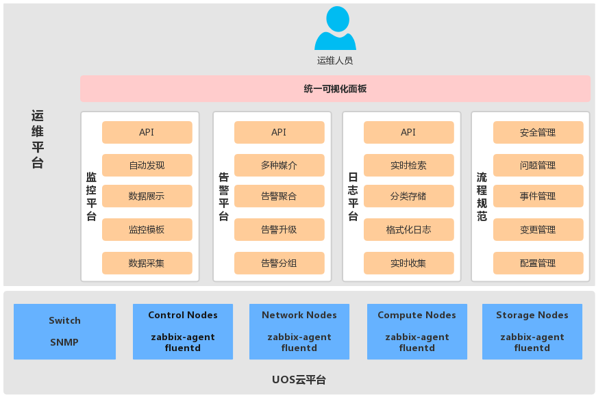
<p><strong>监控平台</strong></p>
<p>监控平台为整个云平台提供全面系统性的监控，监控项从多个维度进行组织，覆盖范围从系统层面(CPU，内存，网络，磁盘等)到服务层面(OpenStack, Ceph)，从底层硬件到上层应用，通过模板化可以灵活组合监控项，目前已经有上千个不重复性监控项，精准有效的监控，是整个运维平台的基础。</p>
<p><strong>日志平台</strong></p>
<p>日志平台能够收集系统中各个组件的日志，进行集中存储，并且可以进行归档，压缩，备份，分析，具有强大的分析功能和报表功能，方便日常运维分析问题。</p>
<p><strong>告警平台</strong></p>
<p>运维人员能够及时有效的获取到集群的异常信息，这非常关键，告警平台提供了非常灵活的告警策略，可以设置告警分组，以及不同的告警级别，让正确的人收到正确的报警，减少无用报警。</p>
<p><strong>可视化面板</strong></p>
<p>可视化面板将监控平台，日志平台，告警平台的核心信息整合到同一个平台的面板中，减少了在不同面板间切换的频率，并且提供了从上到下层级结构的面板关联，能够让运维人员更加快速的定位核心信息。</p>
<p>UOS运维工具使用Opstools工具来部署，Opstools基于Ansible开发，具有快速部署、简单配置、无需Agent、链接安全等特性。
Opstools能够部署出可靠的监控平台、日志平台和告警平台。可以部署在虚拟机或物理机上。Opsserver节点配置要求如下</p>
<ul class="simple">
<li>环境要求：Centos 7.x 64bit</li>
<li>虚机配置： 4Core 16G （有条件的起虚机可以起8C+32G内存，根磁盘300G以上）</li>
<li>物理机配置： 40Core 96G，一块1T以上的SSD，挂载到/var/lib/ （将原有目录文件移动过来,挂载好,写好fstab，没条件的至少挂500G的数据库硬盘）</li>
<li>网络配置：100M带宽可满足1000台以下节点的监控和日志流量需求</li>
<li>软件包版本：<a class="reference external" href="https://confluence.ustack.com/pages/viewpage.action?pageId=17082006">https://confluence.ustack.com/pages/viewpage.action?pageId=17082006</a> （必须确认你的mirror源有和你UOS版本一致的最新软件包，否则肯定有问题）</li>
</ul>
</div>
<div class="section" id="id3">
<h2>8.2. 部署<a class="headerlink" href="#id3" title="Permalink to this headline">¶</a></h2>
<ol class="arabic">
<li><p class="first">参考3.5小节起opsserver虚拟机，需要配置两个网络，使ops节点能与undercloud通讯和overcloud通讯，添加密钥使undercloud节点可以免秘钥登陆opsserver</p>
<div class="highlight-default notranslate"><div class="highlight"><pre><span></span>$ sudo unxz -k -c CentOS-7-x86_64-GenericCloud-1611.qcow2.xz &gt; /var/lib/libvirt/images/opsserver.qcow2
$ sudo qemu-img resize /var/lib/libvirt/images/opsserver.qcow2 1T
$ sudo virt-customize -a /var/lib/libvirt/images/opsserver.qcow2 --root-password password:your_password
$ sudo virt-install --boot hd --name opsserver --memory=16384 --vcpus=4 --disk path=/var/lib/libvirt/images/opsserver.qcow2 ---network network=ovs-mgmt --network network=ovs-pxe --graphics=vnc,listen=&#39;0.0.0.0&#39; --hvm --os-variant=centos7.0 --noautoconsole --import --noreboot
</pre></div>
</div>
</li>
<li><p class="first">修改ops节点的hostname</p>
<div class="highlight-default notranslate"><div class="highlight"><pre><span></span><span class="n">hostnamectl</span> <span class="nb">set</span><span class="o">-</span><span class="n">hostname</span> <span class="n">zabbix</span><span class="o">-</span><span class="n">server</span>
</pre></div>
</div>
</li>
<li><p class="first">在跳板机undercloud上（可以直接ssh到所有机器的节点）使用stack用户克隆代码到本地</p>
<div class="highlight-default notranslate"><div class="highlight"><pre><span></span><span class="n">git</span> <span class="n">clone</span> <span class="n">http</span><span class="p">:</span><span class="o">//</span><span class="n">gitlab</span><span class="o">.</span><span class="n">ustack</span><span class="o">.</span><span class="n">com</span><span class="o">/</span><span class="n">devops</span><span class="o">/</span><span class="n">opstools</span><span class="o">.</span><span class="n">git</span>
</pre></div>
</div>
</li>
<li><p class="first">配置节点信息</p>
<div class="highlight-default notranslate"><div class="highlight"><pre><span></span><span class="p">[</span><span class="n">root</span><span class="nd">@puppet</span> <span class="o">~</span><span class="p">]</span><span class="c1"># vim inventory/structure</span>
</pre></div>
</div>
</li>
</ol>
<p>将”[zabbix-server-mysql-standalone] [grafana] [elasticsearch] [kibana] [zabbix-agent] [fluentd-agent]”修改为各组件节点实际IP地址（注意只修改IP，而且[fluentd-agent]中不需要加上opsserver的ip，按照给出模版修改即可）</p>
<p>注意[zabbix-agent]字段也要加上undercloud的ip，以便对于undercloud做监控，需要undercloud可以免密登录自己。</p>
<p>[mysql]字段中只需要填写opsserver节点ip和overcloud随机一台有数据库服务的控制节点的ip即可（此字段用于在这两台机器上添加数据库监控）</p>
<ol class="arabic" start="5">
<li><p class="first">配置server端信息</p>
<div class="highlight-default notranslate"><div class="highlight"><pre><span></span><span class="n">vim</span> <span class="n">group_vars</span><span class="o">/</span><span class="nb">all</span><span class="o">.</span><span class="n">yml</span>
</pre></div>
</div>
</li>
</ol>
<p>这里我们修改“zabbix_server_ip”和“elasticsearch_host”。</p>
<p>然后还要修改“storage_management_ip”、“mon_ip”和“storage_ip”，这里是ping监控的地址：</p>
<blockquote>
<div><div class="highlight-default notranslate"><div class="highlight"><pre><span></span>storage_management_ip   存储管理网IP，（就是cluster_network）填写OSD节点的storage management network ip即可
mon_ip   ceph-mon的IP，可以参考控制节点/etc/ceph/ceph.conf中mon_host的地址填写，一般为3个，例如210.29.33,61,65,69
storage_ip   存储网IP，(就是public_network)填写OSD节点的storage network ip即可
</pre></div>
</div>
</div></blockquote>
<p>多地址按逗号隔开，前3位为网段，然后加一个逗号，后面是IP尾数，以逗号隔开，例如“10.0.16,68,70,72”（如果存储节点管理IP和存储IP相同，则不需要填写storageip，需要实施人员确保COMP_MANAGEMENT_IP和STORAGE_IP的IP尾数的主机一致）。</p>
<p>Elasticsearch_mem”建议设置为ops节点内存的一半，但不超过32G。其他配置项，有额外需求再修改</p>
<ol class="arabic" start="6">
<li><p class="first">只想单独部署某一组件，注释掉playbook中的组件即可。这里执行全量部署（包括Opsserver节点zabbix-server、es、kibana、grafana、集群所有节点zabbix-agent、fluentd）</p>
<div class="highlight-default notranslate"><div class="highlight"><pre><span></span><span class="p">[</span><span class="n">root</span><span class="nd">@puppet</span> <span class="o">~</span><span class="p">]</span><span class="c1"># ansible-playbook playbook-opsserver.yml -s （注意这里加s，使用heat-admin用户的sudo权限）</span>
</pre></div>
</div>
</li>
</ol>
<p>等待playbook执行完成即可(执行完成确认没有failed,及中途没有error才行)</p>
<ol class="arabic" start="7">
<li><dl class="first docutils">
<dt>额外功能：elasticsearch多节点部署</dt>
<dd><ul class="first last simple">
<li>如果客户要求日志平台多节点点部署请看这里</li>
<li>修改inventory/structure，填写#es ha字段下的备节点IP即可</li>
<li>修改group_vars/all.yml，填写#es high availability字段下的ip，将elasticsearch_ha置为true即可</li>
<li>修改完成后，执行playbook即可。</li>
</ul>
</dd>
</dl>
</li>
<li><p class="first">playbook跑完之后，需要登录zabbix面板，检查主机模版是否完整，登录面板-》点击“配置”-》“模版”，查看群组中是否存在图片上的7个模版，没有的话，登录opsserver节点，手动执行脚本，执行完之后再确认下模版是否出现（最好不管存在否都跑一次脚本）：</p>
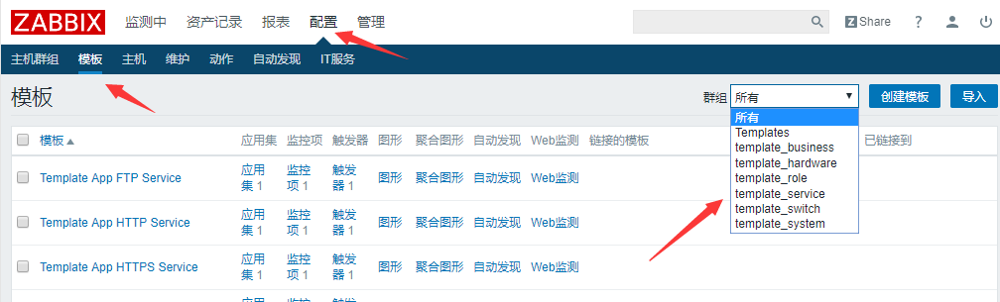
<div class="highlight-default notranslate"><div class="highlight"><pre><span></span><span class="n">python</span> <span class="o">/</span><span class="n">usr</span><span class="o">/</span><span class="n">lib</span><span class="o">/</span><span class="n">zabbix</span><span class="o">/</span><span class="n">uos</span><span class="o">-</span><span class="n">zabbix</span><span class="o">-</span><span class="n">templates</span><span class="o">/</span><span class="n">import_template</span><span class="o">.</span><span class="n">py</span>
</pre></div>
</div>
</li>
</ol>
</div>
<div class="section" id="id4">
<h2>8.3. 后续配置<a class="headerlink" href="#id4" title="Permalink to this headline">¶</a></h2>
<div class="section" id="id5">
<h3>8.3.1. 在浏览器上登陆平台<a class="headerlink" href="#id5" title="Permalink to this headline">¶</a></h3>
<ul>
<li><p class="first">Kibana面板：IP/kibana</p>
<blockquote>
<div><div class="highlight-default notranslate"><div class="highlight"><pre><span></span><span class="n">user</span><span class="o">/</span><span class="n">passwd</span><span class="p">:</span><span class="n">operator</span><span class="o">/</span><span class="n">changeme</span>
</pre></div>
</div>
</div></blockquote>
</li>
<li><p class="first">Zabbix面板：IP/zabbix</p>
<blockquote>
<div><div class="highlight-default notranslate"><div class="highlight"><pre><span></span><span class="n">user</span><span class="o">/</span><span class="n">passwd</span><span class="p">:</span><span class="n">Admin</span><span class="o">/</span><span class="n">zabbix</span>
</pre></div>
</div>
</div></blockquote>
</li>
<li><p class="first">Grafana面板：IP/grafana</p>
<blockquote>
<div><div class="highlight-default notranslate"><div class="highlight"><pre><span></span><span class="n">user</span><span class="o">/</span><span class="n">passwd</span><span class="p">:</span><span class="n">admin</span><span class="o">/</span><span class="n">admin</span>
</pre></div>
</div>
</div></blockquote>
</li>
</ul>
</div>
<div class="section" id="kibana">
<h3>8.3.2. 在kibana面板手动创建索引<a class="headerlink" href="#kibana" title="Permalink to this headline">¶</a></h3>
<blockquote>
<div>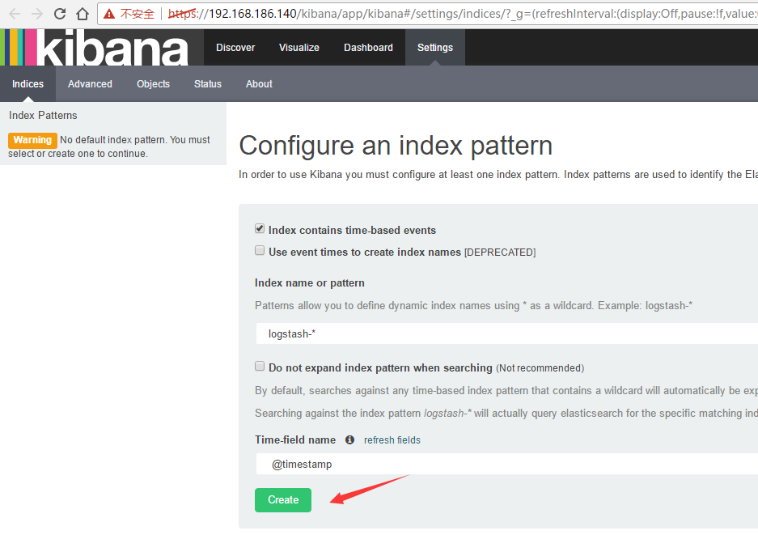
</div></blockquote>
<ol class="arabic">
<li><p class="first">第一次登陆kibana面板，会让你创建第一个索引，创建默认的 <cite>logstash-*</cite> ，点击“Create”按钮</p>
</li>
<li><p class="first">创建完默认的logstash索引，还要再创建两个索引，点击右上角Setting-》Indices-》点击“add index”按钮，在index name 那个框输入一个 <cite>openstack-*</cite>，点击create</p>
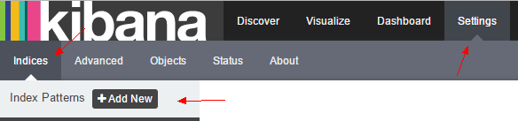
</li>
<li><p class="first">再创建一个 <cite>system-*</cite> 索引，同上再操作一遍。一共创建3个索引</p>
<div class="highlight-default notranslate"><div class="highlight"><pre><span></span><span class="n">logstash</span><span class="o">-*</span> <span class="n">openstack</span><span class="o">-*</span> <span class="n">system</span><span class="o">-*</span>
</pre></div>
</div>
</li>
<li><p class="first">最后效果能够出现3个索引选项：</p>
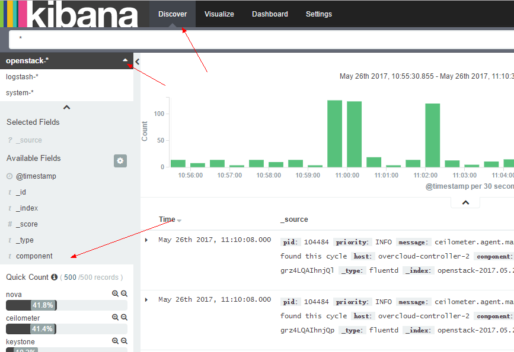
</li>
<li><p class="first">修改kibana-http用户的认证账号密码 (可选项，可以让用户自行修改)</p>
</li>
<li><p class="first">修改文件/etc/httpd/conf/htpasswd-kibana，添加用户</p>
<div class="highlight-default notranslate"><div class="highlight"><pre><span></span><span class="n">htpasswd</span> <span class="o">-</span><span class="n">b</span> <span class="n">htpasswd</span><span class="o">-</span><span class="n">kibana</span> <span class="n">kibana</span> <span class="mi">123456</span>
</pre></div>
</div>
</li>
<li><p class="first">利用htpasswd命令修改用户密码 要达到这个目的，需要先利用htpasswd命令删除指定用户，然后再利用htpasswd创建用户即可实现修改密码的功能。</p>
<div class="highlight-default notranslate"><div class="highlight"><pre><span></span><span class="n">htpasswd</span> <span class="o">-</span><span class="n">D</span> <span class="n">htpasswd</span><span class="o">-</span><span class="n">kibana</span> <span class="n">kibana</span>
</pre></div>
</div>
</li>
</ol>
</div>
<div class="section" id="grafanaes">
<h3>8.3.3. 在Grafana面板启用ES数据源<a class="headerlink" href="#grafanaes" title="Permalink to this headline">¶</a></h3>
<ol class="arabic">
<li><p class="first">点击左上角的菜单按钮-》点击“Data Sources”菜单-》点击“elasticsearch”数据源-》只需编辑Pattern为“Daily”-》点击左下角的“Save &amp; Test”，出现”Success”提示即可。</p>
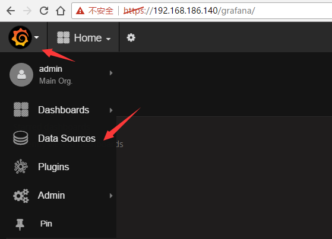
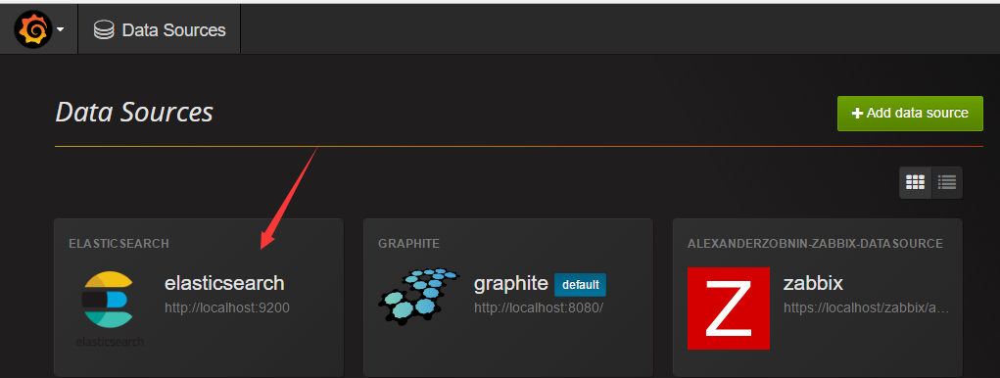
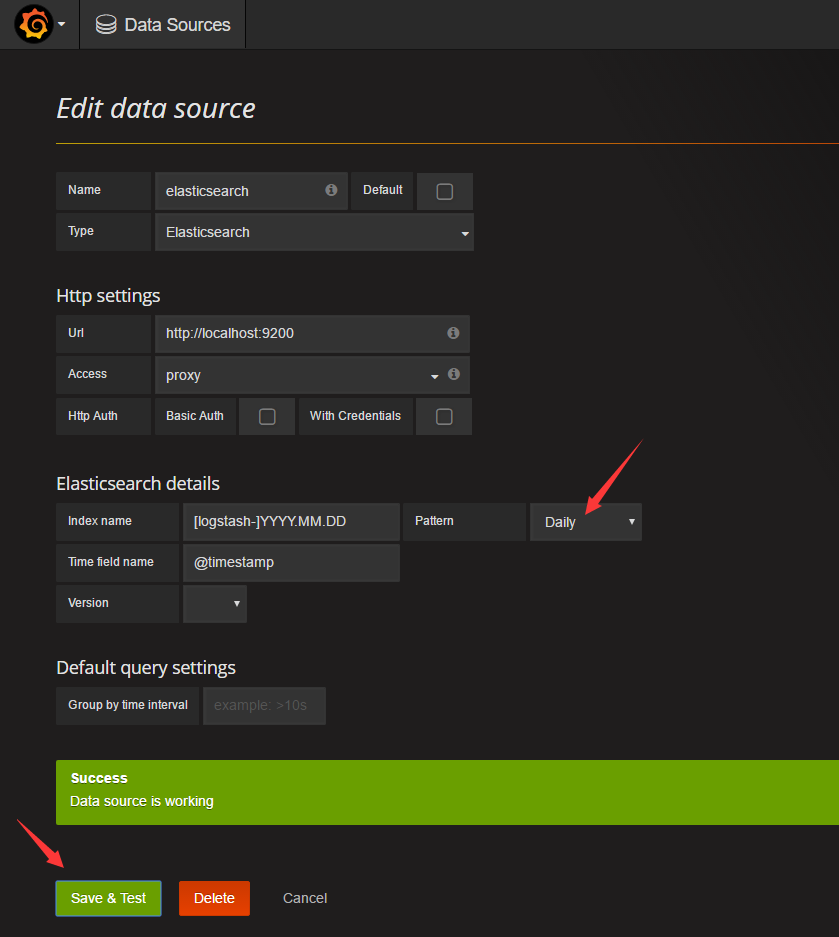
</li>
</ol>
</div>
<div class="section" id="grafanazabbix">
<h3>8.3.4. 在Grafana面板启用Zabbix数据源<a class="headerlink" href="#grafanazabbix" title="Permalink to this headline">¶</a></h3>
<ol class="arabic">
<li><p class="first">点击左上角的菜单按钮-》点击“Data Sources”菜单-》点击“Zabbix”数据源-》只需填写“Username”和“Password”-》点击左下角的“Save &amp; Test”，出现”Success”提示即可。</p>
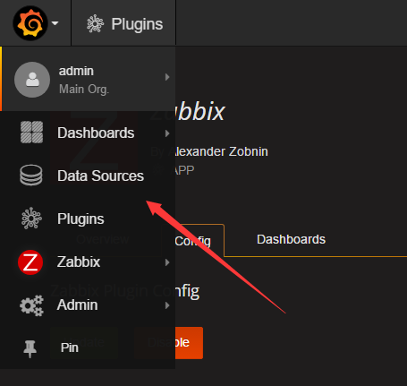
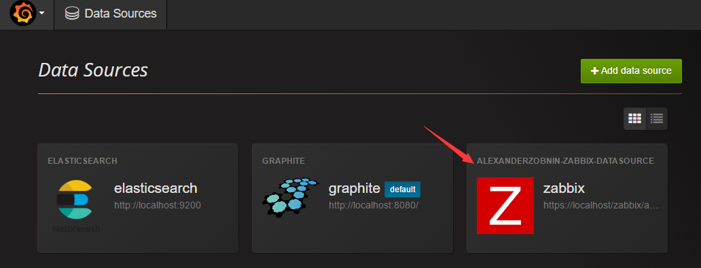
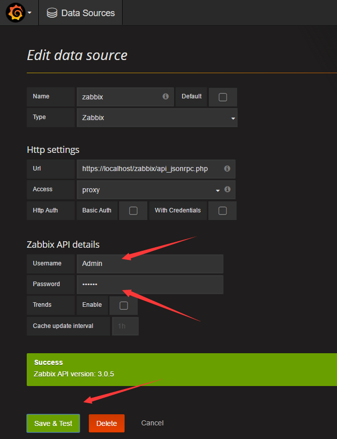
</li>
</ol>
<p>如果“Save”失败，将“HTTP Auth”下的“Skip TLS Verification (Insecure)”勾选上，再次保存即可。</p>
</div>
<div class="section" id="zabbix">
<h3>8.3.5. 检查Zabbix是否正常工作<a class="headerlink" href="#zabbix" title="Permalink to this headline">¶</a></h3>
<ol class="arabic">
<li><p class="first">登陆面板之后-》点击一级菜单“配置”-》再点击二级菜单“主机”-》查看是否所有主机都已注册上。确认后勾选左上角“名称”框旁的全选方框，再左下角点击启用即可。</p>
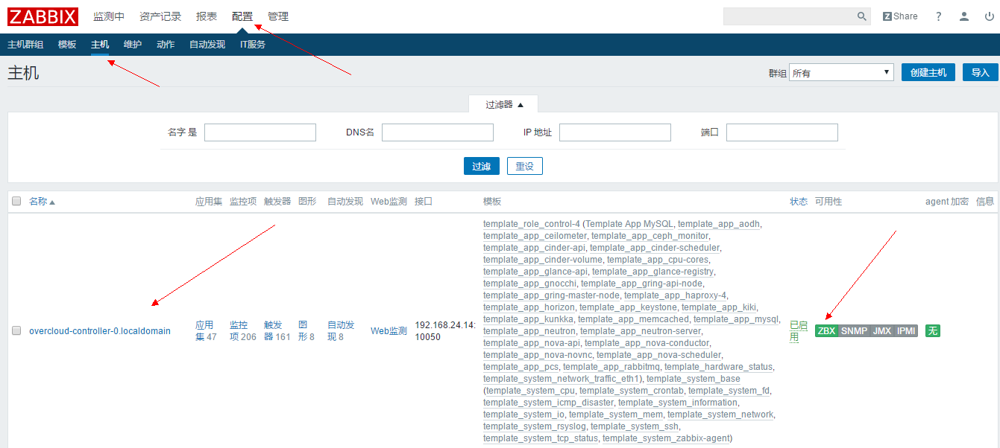
</li>
<li><p class="first">稍等10分钟后，在首页面板查看，有无告警，并排查告警是否误告。在首页Zabbix状态那也可以看到已启用的主机数量。</p>
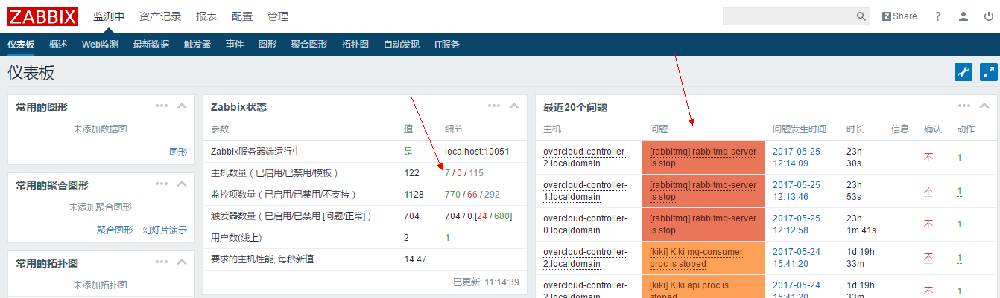
</li>
</ol>
</div>
<div class="section" id="id6">
<h3>8.3.6. 配置监控信息<a class="headerlink" href="#id6" title="Permalink to this headline">¶</a></h3>
<ol class="arabic">
<li><p class="first">登陆面板之后-》点击一级菜单“管理”-》再点击二级菜单“一般”-》选择三级选项“宏”，确认环境信息。</p>
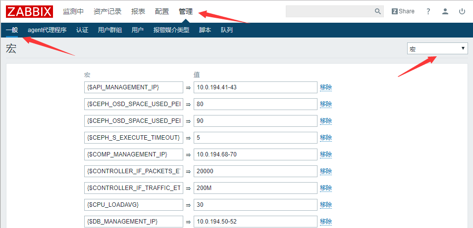
</li>
</ol>
<p>需要确认IP地址是否按照all.yaml填写正确。格式为：多地址按逗号隔开，前3位为网段，然后加一个逗号，后面是IP尾数，以逗号隔开，例如“10.0.16,68,70,72”（如果存储节点管理IP和存储IP相同，则不需要填写storageip，需要实施人员确保COMP_MANAGEMENT_IP和STORAGE_IP的IP尾数的主机一致）。</p>
</div>
</div>
</div>


          </div>
          <footer>
  
    <div class="rst-footer-buttons" role="navigation" aria-label="footer navigation">
      
        <a href="../upgrade.html" class="btn btn-neutral float-right" title="9. UOS 升级">Next <span class="fa fa-arrow-circle-right"></span></a>
      
      
        <a href="../post-deploy.html" class="btn btn-neutral" title="7. OverCloud 初始化"><span class="fa fa-arrow-circle-left"></span> Previous</a>
      
    </div>
  
</footer>
        </div>
      </div>
    </section>
  </div>

  <div class="footer">
      &#169; Copyright 2017, UnitedStack Inc. All Rights Reserved.
  </div>

  
    <script type="text/javascript">
      var DOCUMENTATION_OPTIONS = {
          URL_ROOT:'../',
          VERSION:'',
          COLLAPSE_INDEX:false,
          FILE_SUFFIX:'.html',
          HAS_SOURCE:  true
      };
    </script>
      <script type="text/javascript" src="../static/jquery.js"></script>
      <script type="text/javascript" src="../static/underscore.js"></script>
      <script type="text/javascript" src="../static/doctools.js"></script>
  

  
  
    <script type="text/javascript" src="../static/js/theme.js"></script>
  

  
  
  <script type="text/javascript">
    jQuery(function () {
      SphinxRtdTheme.StickyNav.enable();
    });
  </script>
   

</body>
</html>
